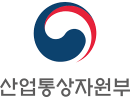
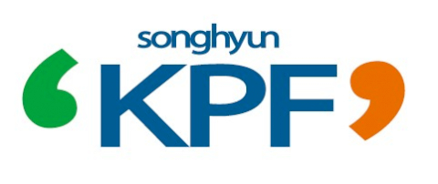

진행중인 과제
V2G 기반 스마트 물류-전력망 통합 운영 최적화 연구
전기차가 소비 주체를 넘어 에너지 조절 자원으로 기능하는 상황을 전제로, 물류 네트워크의 운영 의사결정과 전력 계통의 안정적 관리를 하나의 최적화 틀에서 통합하여 비용 효율성·계통 안정성·지속가능성을 동시에 달성할 수 있는 통합 운영 전략을 제시하는 연구
한국연구재단 · 연구책임자
실시간 동적 가격 반응형 EV 물류–배전망 통합 운영 모형(EVRP–OPF) 정립에 관한 연구
실시간 전력요금 신호를 내재화하여 EV 물류 경로·충방전 의사결정과 배전망 최적화(OPF)를 연계하고, 이를 통해 물류 비용과 전력 계통 부담을 동시에 최소화하는 통합 운영 최적화 프레임워크를 정립하는 연구
정석물류학술재단 · 연구책임자
반도체 팹 물류 자동화를 위한 OHT 제어 전략의 체계적 비교 및 최적화 연구
반도체 팹의 자동화 물류 시스템의 핵심인 OHT(Overhead Hoist Transport)의 다양한 배차·경로·교통 제어 전략을 체계적으로 비교·분석하고, 시뮬레이션 기반 평가와 수리적 최적화 기법을 결합하여 혼잡·교착 상황에서도 팹 전체의 물류 처리량과 운영 효율을 극대화할 수 있는 통합 제어 전략을 도출하는 연구
경희대학교 · 연구책임자
Real-time last mile delivery system using collaborative ground-aerial movable stations: Theory, algorithm and application
실시간 라스트마일 배송 시스템 개발을 위한 지상-공중 이동 기지 협업 시스템의 이론, 알고리즘 및 응용 연구
한국연구재단
완료한 과제
Development of multipoint servocontrol die cushion and process monitoring module for improving the press forming quality
프레스 성형 품질 향상을 위한 다점 서보 제어 다이 쿠션 및 공정 모니터링 모듈 개발
산업통상자원부 · (주)한빛산업

Development of motor housing for high-quality electric vehicles through the application of high-function intelligent molds
고기능 지능형 금형 적용을 통한 고품질 전기차 모터 하우징 개발
중소벤처기업부 · (주)대국정공
Development of material forging and manufacturing process technology to improve the mechanical properties of the core parts of the reducer
감속기 핵심 부품의 기계적 특성 향상을 위한 소재 단조 및 제조 공정 기술 개발
산업통상자원부 · (주)케이피에프충주공장
Development of vibration insulation products using hybrid materials for powertrain mount systems
파워트레인 마운트 시스템용 하이브리드 소재를 활용한 진동 절연 제품 개발
산업통상자원부 · (주)코다코
Development of multipoint servocontrol die cushion and monitoring module
다점 서보 제어 다이 쿠션 및 모니터링 모듈 개발
산업통상자원부 · (주)한빛산업
Development of manufacturing technology for multilateral body parts
다각형 차체 부품 제조 기술 개발
산업통상자원부 · (주)새한산업
Forging and process technology to improve reducer component strength
감속기 부품 강도 향상을 위한 단조 및 공정 기술
산업통상자원부 · (주)케이피에프충주공장High-performance powertrain housing using intelligent mold tech
지능형 금형 기술을 활용한 고성능 파워트레인 하우징
산업통상자원부 · (주)코넥Hybrid vibration proof system development for PBV powertrain mounts
PBV 파워트레인 마운트용 하이브리드 진동 방지 시스템 개발
산업통상자원부 · (주)코다코
Visualization of Repair Operations Management for Networked Systems Resilience
네트워크 시스템 회복력을 위한 수리 운영 관리 시각화
Navy Crane Center, U.S.
Resilience in Networked Systems using collaboration (RNSC) Project
협업을 활용한 네트워크 시스템 회복력 (RNSC) 프로젝트
Navy Crane Center, U.S.